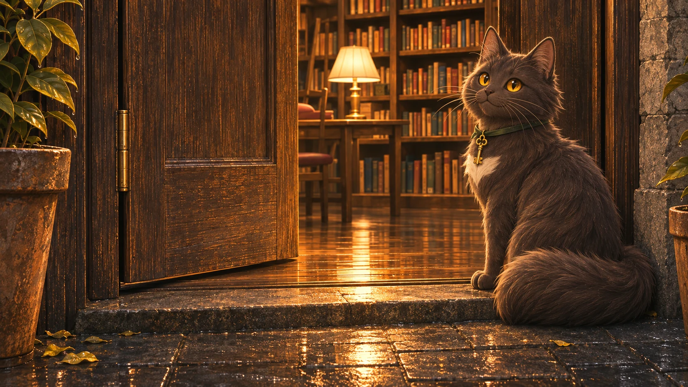

門內的書房 ／ 一盞為你留的燈
今晚，書櫃收到一封沒有署名的信
夜深之後，城市裡有一間書房，仍替晚睡的人留著燈。
每天，都有人帶著一件還說不清楚的心事走進來。他們選一張花牌，把問題交給書櫃。書櫃不替誰預言命運，只從書頁間找出一段回應、一個可以試試看的小步驟，和一本也許能陪伴此刻的書。
離開時，那件心事不一定已經有了答案。但你可以帶走一頁方向，等準備好了，再慢慢往下讀。
阿墨：「挑一張吧。從最放不下的那件事開始說就好。」
世界走得很快，你可以慢一點。
選一張花牌，讓一本書陪你找回方向。
一張心事花牌 · 一頁溫柔回應 · 一本為你選的書
門內的書房 ／ 一盞為你留的燈
夜深之後，城市裡有一間書房，仍替晚睡的人留著燈。
每天，都有人帶著一件還說不清楚的心事走進來。他們選一張花牌，把問題交給書櫃。書櫃不替誰預言命運，只從書頁間找出一段回應、一個可以試試看的小步驟，和一本也許能陪伴此刻的書。
離開時，那件心事不一定已經有了答案。但你可以帶走一頁方向，等準備好了，再慢慢往下讀。
阿墨：「挑一張吧。從最放不下的那件事開始說就好。」
第一頁 / 選一張花牌
把心事放進一張花牌裡。沒有對錯，選最有感覺的那一張。
花牌只為心事分類，不預測命運。
第二頁 / 寫下心事
阿墨：「說得零零碎碎也沒關係，我在聽。」
阿墨正在聽

「我聽見了幾個方向。你可以選一個，也可以回去改寫，我再聽一次。」
第三頁 ／ 極光正在尋書
留給你的 / 一頁方向

門邊 ／ 回到夜色裡
門外還是原來的街道。那件心事可以等你準備好了，再慢慢往下讀。
阿墨：「今晚，先帶走這一頁。下次路過，燈還會亮著。」
我的書籤 / 那些留下的微光
收藏留在這台裝置；不包含你寫下的心事。
關於書房 / 為什麼這盞燈亮著
當資訊很多、心事卻無處安放，
我們想留下一個可以慢慢說話的地方。
心事書櫃以日式深夜書房為靈感，透過五張花牌，陪你整理人際、感情、工作、人生與說不清的未知。一個問題，帶走一張正向書籤與一本中文推薦書。
以問題裡的情境與關鍵字配對策選書庫，重視內容相關性。近期推薦會留在本機，優先避免重複；不合適或讀過可換一本。
先承認你的處境，再給一個可選擇的小行動。格言、故事與練習為本站原創，與書中引文清楚區別；不以吉凶替你做決定。
書目核對使用台灣圖書館與中文出版資訊，提供已查得的館藏頁及各地查詢入口。即時在架、借閱資格與預約依各館為準。
問題在瀏覽器內處理，不上傳。只保存你主動收藏的書籤、推薦作品 ID、動態偏好與本機回饋，可隨時清除。
本版採用已整理的中文書目與情境關鍵字規則，阿墨的引導與追問依辨識到的主題變化，並非即時 AI 對話；尚未批次串接圖書館 API。沒有相符內容時，會請你補充情境，不隨機配書。本站的書籍導讀與推薦理由為自行撰寫，不搬運出版社摘要、封面或全文。
書目核對日期：2026 年 11 月 3 日。版本與館藏可能調整，請以來源頁為準。裝飾書封為本站設計，並非出版品實際封面。
收藏與推薦紀錄僅存在這台裝置，不跨裝置同步。清除瀏覽器網站資料也會移除紀錄。外部館藏網站適用各自的資料政策；本站不讀取你的借閱證或借閱紀錄。
這裡提供閱讀與自我整理的陪伴，無法代替專業心理、法律或醫療協助；也不承諾一本書能解決所有困難。